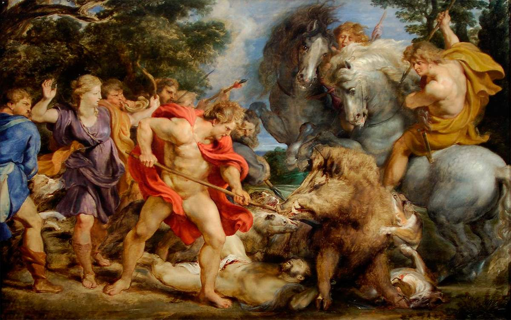

Охота на калидонского вепря
Калидонский вепрь, огромный, свирепый и ужасный зверь был сыном кроммионской свиньи. Имя связано с местечком Кроммионом, где свинья бесчинствовала, уничтожая урожаи и убивая простых людей. Измученным жителям пришел на помощь Тесей, который в жестоком бою одержал победу над нею. Но у нее вырос сын, не менее свирепый и кровожадный. Он был послан оскорбленной богиней Артемидой в ответ на то, что царь правитель Капидона – Оней, принеся жертву всем богам, отказался в жетровприношении ей…